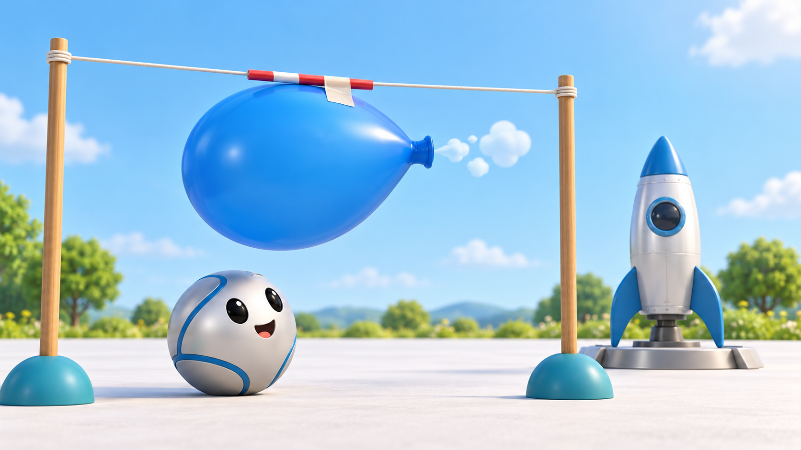
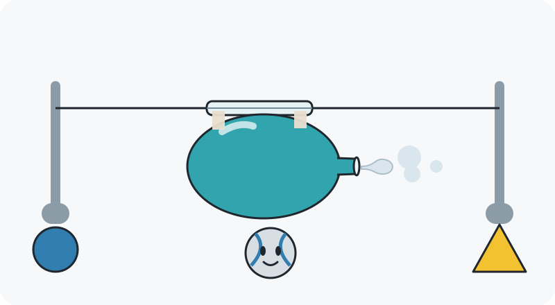

Pip’s next adventures
Ten worlds to explore. Open a lesson to review its illustration, try the questions, and see how the hints teach the idea.
Choose an adventure

What children learn
A child could say or show
Try the five questions
Choose a question

The teaching plan
Pip’s introduction
Start with support
Stretch when ready
The misunderstanding to explore
The ending
Try it away from the screen
Design notes and references
Questions for your review
Review preview only. The five questions have authored answers and explanations; the scenes are static diagrams. “Read question aloud” uses the browser’s available voice. No game integration or child-testing result is implied.